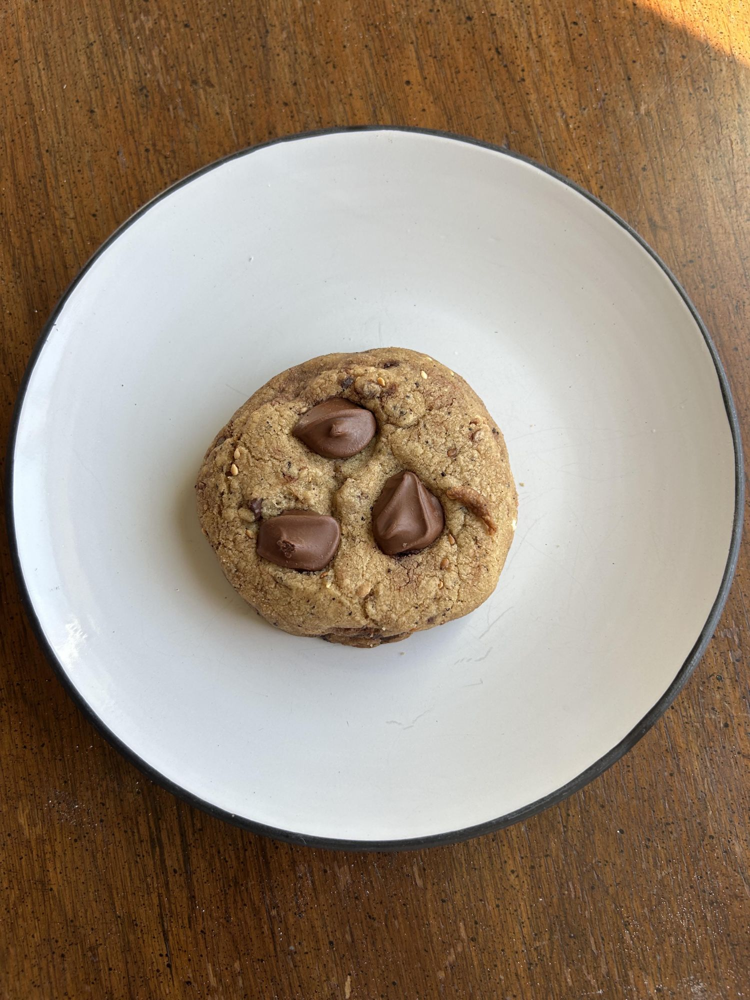

Baking / Chocolate chip cookies
Salted Sesame Chocolate Chip

- Yield
- about 20 cookies
- Rest
- 2 h chilled, better overnight
- Oven
- 350F, 8 min then 3-4 min after topping
- Source
- Dear Saturdays, dearsaturdays.com
- Energy Cost
- $1.45 (12 min bake plus 30 min, 3.5 kW at 59 cents/kWh)
Scorecard
3.5/5Overall
Ingredients
Batch
- Unsalted butter: 227 g
- Dark brown sugar: 150 g
- Caster sugar: 110 g
- Egg, extra large: 1
- Vanilla extract: 2 tsp
- All-purpose flour: 245 g
- Baking soda: 0.75 tsp
- Baking powder: 0.25 tsp
- Kosher salt: 1 tsp
- Dark chocolate, 70%, chopped: 200 g
- Espresso powder: 1 tsp
- Black sesame seeds, toasted: 2 tbsp
- White chocolate melting chips, for the shards: 142 g
- Black sesame paste, for the shards: 2 tbsp
- Maldon flaked salt: to taste, for topping
Method
- Put the butter in a medium saucepan over medium heat and swirl it often, 5 to 7 minutes, until it is golden brown and smells nutty. Pour it into a heatproof bowl and leave it 5 to 7 minutes to cool.
- Whisk both sugars into the warm butter until the mixture turns glossy and a shade paler.
- Whisk in the egg and the vanilla, carrying on until it is smooth and you cannot feel sugar grain.
- In a second bowl, whisk the flour, baking soda, baking powder and salt together.
- Fold the dry mix into the wet and stop the moment it comes together. Fold through the chopped chocolate, the espresso powder and the black sesame seeds.
- Cover and chill 2 hours, or overnight if you can plan that far ahead.
- For the shards, melt the white chocolate chips over a double boiler until smooth and stir the sesame paste through. Spread it thin on a lined sheet, freeze 15 to 20 minutes to firm, then snap it into irregular pieces. Keep them in the fridge until the cookies come out.
- Heat the oven to 350F. Scoop mounds of about 3 tbsp onto a lined sheet, 2 inches apart.
- Bake 8 minutes, to the point where they have puffed but the centres are still soft.
- Take the sheet out and bang it flat on the counter. Press 2 or 3 cold shards onto each cookie and add a pinch of Maldon.
- Return them for 3 to 4 minutes, until the edges colour and the middles still look a little underdone.
- Leave them on the sheet 5 minutes before moving them to a rack.
Notes
- Browned butter is the fat here, so there is no creaming stage and no room-temperature butter to plan for.
- The pan bang after the first 8 minutes is what gives the flat ridged shape. Skipping it leaves them domed.
- Make the shards during the chill. They go onto hot cookies but have to go on cold, or they slump instead of sitting proud.
- Unsalted butter, with the salt weighed in separately, then flaked salt on top.
- The source gives no yield. About 20 is what a 3 tbsp scoop gets out of roughly 1030 g of dough.
Learnings
Made once, graded 3.5. Nothing to change yet.